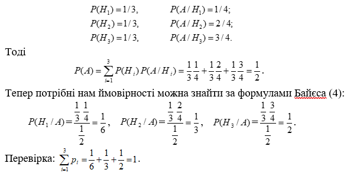

Тема. Формула повної ймовірності
Якщо подія A може відбутися лише за умови настання однієї з несумісних подій \(H_1,H_2,...,H_n\), що утворюють повну групу, то події \(H_1,H_2,...,H_n\) називають гіпотезами.
Нехай відомі ймовірності гіпотез \(H_i\) й умовні ймовірності події A при цих гіпотезах, тобто відомі значення Р(\(H_i\)) і Р(А/\(H_i\)),\(i=\overline{1,n}\). У цьому випадку ймовірність події A визначається за формулою, що називається формулою повної ймовірності:
\(P(A)=\sum_{i=1}^nP(H_i)P(\frac{A}{H_i})\).
Приклад. У двох коробках лежать зелені та червоні м'ячі: у першій - 4 зелених і 5 червоних, у другій - 7 зелених і 3 червоних. З другої коробки навмання взяли м'яч і переклали у першу коробку. Знайти ймовірність того, що навмання взятий після цього з першої коробки м’яч буде зеленим.
Розв’язання. Перекладання з другої коробки зеленого м'яча (подія - перша гіпотеза) і червоного м'яча (подія - друга гіпотеза) утворює повну групу незалежних подій.
Р(\(B_1\))=0,7 і Р(\(B_2\))=0,3.
Умовні ймовірності вилучення з першої коробки зеленого м'яча (подія А) при перекладанні туди зеленого або червоного м'яча з другої коробки: Р(\(\frac{A}{B_1}\))=0,5 і Р\(\frac{A}{B_2}\))=0,4.
Шукана ймовірність обчислюється за формулою повної ймовірності для двох гіпотез: P(A)=P(\(B_1\))P(\(\frac{A}{B_1}\))+P(\(B_2\))P(\(\frac{A}{B_1}\))=0,7∙0,5+0,3∙0,4=0,47.
Формула Байєса (теорема гіпотез)
Нехай є повна група несумісних гіпотез \(H_1,H_2,...,H_n\), відомі ймовірності Р(i=\overline{1,n}), , цих гіпотез до випробування і умовні ймовірності Р(\(\frac{A}{H_1}\)) події А,яка може відбутися лише спільно з однією гіпотезою.
Виконано випробування, в результаті якого подія A відбулася, тоді умовні ймовірності Р(\(\frac{H_i}{A}\)) обчислюються за формулою Байєса:
Р(\(\frac{H_i}{A}\))=\(\frac{P(H_i)P(\frac{A}{H_i})}{P(A)}\), де \(P(A)=\sum_{i=1}^nP(H_i)P(\frac{A}{H_i})\)
Приклад. Маємо три однакові урни, в кожній з яких по 4 кулі. У першій – 1 біла, 3 чорних; у другій – 2 білих, 2 чорних; у третій – 3 білих, 1 чорна. Із навмання взятої урни навмання вийнято білу кулю. Знайти ймовірність того, що кулю вийнято з i – ї урни \((i=\overline{1,3})\).
Розв’язання. Подія А – вийнято білу кулю – настає після настання однієї з гіпотез \(H_i(i=\overline{1,n})\) – вибрано i – ту урну
